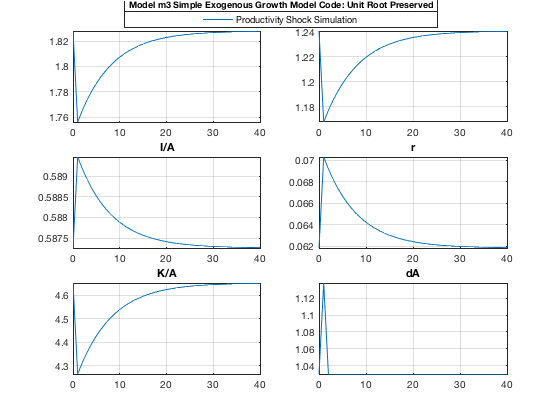
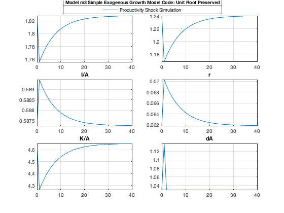
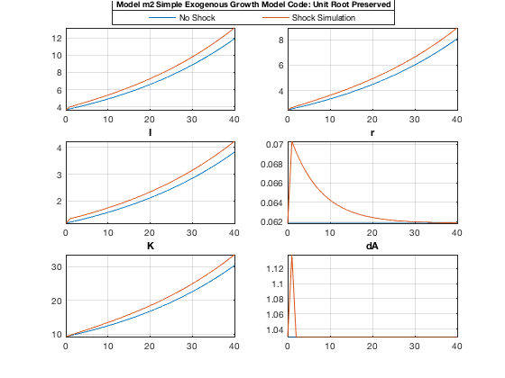

Compare Shock Simulations in Stationarized and Unit-Root Models
In this m-file, we show that the three model versions (stationarized and unit-root) have identical shock responses.
Contents
Clear the Workspace
Clear all variables, close all figure windows, clear command window, and check the IRIS version.
clear close all clc irisrequired 20180209
Load the Three Model Objects
Load all three versions of the model created in read_model:
- m1 is the stationarized version,
- m2 is the unit-root version solved around a point on the balanced-growth path where productivity A=1,
- m3 is the unit-root version solved around a point on the balanced-growth path where productivity A=2.
load MAT/read_model.mat m1 m2 m3
Simulate a Productivity Shock
Simulate the same shock, u, in the three versions of the model.
d1 = sstatedb(m1, 1:40); d1.u(1) = 0.10; s1 = simulate(m1, d1, 1:40); s1 = dbextend(d1, s1); d2 = sstatedb(m2, 1:40); d2.u(1) = 0.10; s2 = simulate(m2, d2, 1:40); s2 = dbextend(d2, s2); d3 = sstatedb(m3, 1:40); d3.u(1) = 0.10; s3 = simulate(m3, d3, 1:40); s3 = dbextend(d3, s3);
Plot the Productivity Shock Responses
Plot the responses in the same variables (or their transformations) for all three model versions.
dbplot(s1, 0:40, {'y', 'c', 'i', 'r', 'k', 'dA'}, 'Tight=', true);
le = visual.hlegend('Top', 'Productivity Shock Simulation');
title(le, ['Model m1 ', comment(m1)]);
dbplot(s2, 0:40, {'Y/A', 'C/A', 'I/A', 'r', 'K/A', 'dA'}, 'Tight=', true);
le = visual.hlegend('Top', 'Productivity Shock Simulation');
title(le, ['Model m2 ', comment(m2)]);
dbplot(s3, 0:40, {'Y/A', 'C/A', 'I/A', 'r', 'K/A', 'dA'}, 'Tight=', true);
le = visual.hlegend('Top', 'Productivity Shock Simulation');
title(le, ['Model m3 ', comment(m3)]);
 
 Compare Numerically the Shock Responses
Display the numerical values and their differences for stationarized output y from the three simulated models.
disp([ s1.y, s2.Y/s2.A, s2.y, s3.Y/s3.A, s3.y ]) disp([ s2.Y/s2.A-s1.y, s2.y-s1.y, s3.Y/s3.A-s1.y, s3.y-s1.y]) maxabs([ s2.Y/s2.A-s1.y, s2.y-s1.y, s3.Y/s3.A-s1.y, s3.y-s1.y])
Series object: 42-by-5
0: 1.8279 1.8279 1.8279 1.8279 1.8279
1: 1.7562 1.7562 1.7562 1.7562 1.7562
2: 1.7655 1.7655 1.7655 1.7655 1.7655
3: 1.7735 1.7735 1.7735 1.7735 1.7735
4: 1.7805 1.7805 1.7805 1.7805 1.7805
5: 1.7867 1.7867 1.7867 1.7867 1.7867
6: 1.792 1.792 1.792 1.792 1.792
7: 1.7967 1.7967 1.7967 1.7967 1.7967
8: 1.8007 1.8007 1.8007 1.8007 1.8007
9: 1.8043 1.8043 1.8043 1.8043 1.8043
10: 1.8073 1.8073 1.8073 1.8073 1.8073
11: 1.81 1.81 1.81 1.81 1.81
12: 1.8124 1.8124 1.8124 1.8124 1.8124
13: 1.8144 1.8144 1.8144 1.8144 1.8144
14: 1.8162 1.8162 1.8162 1.8162 1.8162
15: 1.8177 1.8177 1.8177 1.8177 1.8177
16: 1.819 1.819 1.819 1.819 1.819
17: 1.8202 1.8202 1.8202 1.8202 1.8202
18: 1.8212 1.8212 1.8212 1.8212 1.8212
19: 1.8221 1.8221 1.8221 1.8221 1.8221
20: 1.8228 1.8228 1.8228 1.8228 1.8228
21: 1.8235 1.8235 1.8235 1.8235 1.8235
22: 1.8241 1.8241 1.8241 1.8241 1.8241
23: 1.8246 1.8246 1.8246 1.8246 1.8246
24: 1.825 1.825 1.825 1.825 1.825
25: 1.8254 1.8254 1.8254 1.8254 1.8254
26: 1.8257 1.8257 1.8257 1.8257 1.8257
27: 1.826 1.826 1.826 1.826 1.826
28: 1.8263 1.8263 1.8263 1.8263 1.8263
29: 1.8265 1.8265 1.8265 1.8265 1.8265
30: 1.8267 1.8267 1.8267 1.8267 1.8267
31: 1.8268 1.8268 1.8268 1.8268 1.8268
32: 1.827 1.827 1.827 1.827 1.827
33: 1.8271 1.8271 1.8271 1.8271 1.8271
34: 1.8272 1.8272 1.8272 1.8272 1.8272
35: 1.8273 1.8273 1.8273 1.8273 1.8273
36: 1.8274 1.8274 1.8274 1.8274 1.8274
37: 1.8274 1.8274 1.8274 1.8274 1.8274
38: 1.8275 1.8275 1.8275 1.8275 1.8275
39: 1.8276 1.8276 1.8276 1.8276 1.8276
40: 1.8276 1.8276 1.8276 1.8276 1.8276
41: 1.8279 1.8279 1.8279 1.8279 1.8279
Columns 1 through 4
'Output to Produc...' '' 'Output to Produc...' ''
Column 5
'Output to Produc...'
user data: empty
Series object: 42-by-4
0: 2.2204e-16 2.2204e-16 2.2204e-16 2.2204e-16
1: 4.4409e-16 4.4409e-16 -4.4409e-16 0
2: 8.8818e-16 6.6613e-16 2.2204e-16 2.2204e-16
3: 1.1102e-15 6.6613e-16 4.4409e-16 4.4409e-16
4: 8.8818e-16 4.4409e-16 6.6613e-16 6.6613e-16
5: 6.6613e-16 6.6613e-16 8.8818e-16 8.8818e-16
6: 6.6613e-16 4.4409e-16 6.6613e-16 8.8818e-16
7: 1.1102e-15 6.6613e-16 6.6613e-16 1.1102e-15
8: 6.6613e-16 8.8818e-16 1.5543e-15 1.5543e-15
9: 6.6613e-16 6.6613e-16 1.1102e-15 1.5543e-15
10: 4.4409e-16 6.6613e-16 6.6613e-16 1.3323e-15
11: 8.8818e-16 2.2204e-16 1.3323e-15 1.3323e-15
12: -4.4409e-16 4.4409e-16 1.5543e-15 1.3323e-15
13: 0 4.4409e-16 1.3323e-15 1.7764e-15
14: 2.2204e-16 4.4409e-16 1.5543e-15 1.7764e-15
15: 4.4409e-16 2.2204e-16 2.4425e-15 1.9984e-15
16: 0 0 1.1102e-15 1.5543e-15
17: 6.6613e-16 0 6.6613e-16 1.7764e-15
18: -2.2204e-16 -4.4409e-16 2.2204e-15 1.7764e-15
19: -6.6613e-16 -6.6613e-16 8.8818e-16 1.5543e-15
20: -1.3323e-15 -4.4409e-16 1.1102e-15 1.7764e-15
21: -2.2204e-16 -6.6613e-16 2.2204e-15 1.9984e-15
22: -1.3323e-15 -8.8818e-16 4.4409e-16 1.9984e-15
23: -1.7764e-15 -8.8818e-16 1.3323e-15 1.7764e-15
24: -6.6613e-16 -1.1102e-15 2.4425e-15 1.9984e-15
25: -1.7764e-15 -1.1102e-15 2.2204e-15 2.2204e-15
26: -1.3323e-15 -1.5543e-15 1.7764e-15 1.9984e-15
27: -1.7764e-15 -1.3323e-15 2.4425e-15 2.2204e-15
28: -2.4425e-15 -1.5543e-15 6.6613e-16 2.2204e-15
29: -1.9984e-15 -1.5543e-15 2.8866e-15 2.2204e-15
30: -1.5543e-15 -1.7764e-15 3.1086e-15 2.2204e-15
31: -2.2204e-15 -1.7764e-15 2.6645e-15 1.9984e-15
32: -2.2204e-15 -1.9984e-15 1.9984e-15 1.9984e-15
33: -1.9984e-15 -2.2204e-15 1.9984e-15 2.2204e-15
34: -2.6645e-15 -2.4425e-15 2.6645e-15 2.2204e-15
35: -3.1086e-15 -2.6645e-15 2.4425e-15 2.4425e-15
36: -3.5527e-15 -2.6645e-15 2.4425e-15 2.4425e-15
37: -2.6645e-15 -2.6645e-15 2.2204e-15 2.2204e-15
38: -2.4425e-15 -2.6645e-15 3.1086e-15 2.4425e-15
39: -2.8866e-15 -2.8866e-15 2.2204e-15 2.4425e-15
40: -3.3307e-15 -2.8866e-15 2.4425e-15 2.4425e-15
41: 0 2.2204e-16 4.4409e-16 2.2204e-16
'' '' '' ''
user data: empty
ans =
3.5527e-15
Unit-Root Responses
In models m2 and m3, the responses inthe unit-root variables (note that the shock has permanent effect on all of them) can be obtained directly.
dbplot(d2 & s2, 0:40, {'Y', 'C', 'I', 'r', 'K', 'dA'}, 'Tight=', true);
le = visual.hlegend('Top', 'No Shock', 'Shock Simulation');
title(le, ['Model m2 ', comment(m2)]);
dbplot(d3 & s3, 0:40, {'Y', 'C', 'I', 'r', 'K', 'dA'}, 'Tight=', true);
le = visual.hlegend('Top', 'No Shock', 'Shock Simulation');
title(le, ['Model m2 ', comment(m2)]);
 Show Variables and Objects Created in This File
whos
Name Size Bytes Class Attributes ans 1x1 8 matlab.ui.Figure d1 1x1 7486 struct d2 1x1 11030 struct d3 1x1 11030 struct le 1x1 8 matlab.graphics.illustration.Legend m1 1x1 23806 model m2 1x1 33716 model m3 1x1 33716 model s1 1x1 7486 struct s2 1x1 11030 struct s3 1x1 11030 struct
Get Help on IRIS Functions Used in This File
help model/sstatedb help model/simulate help data/dbextend help data/dbplot help visual/hlegend